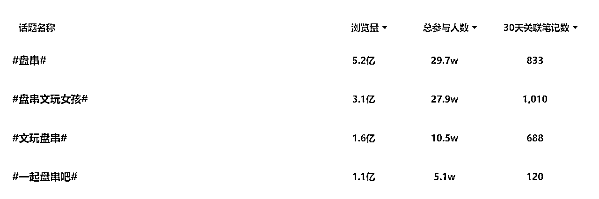
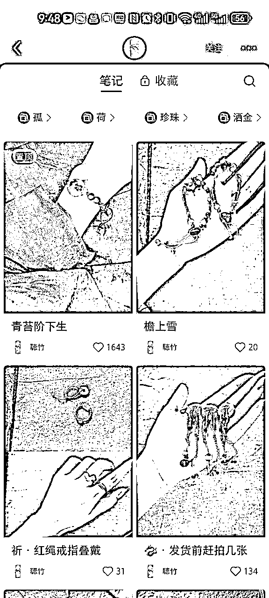
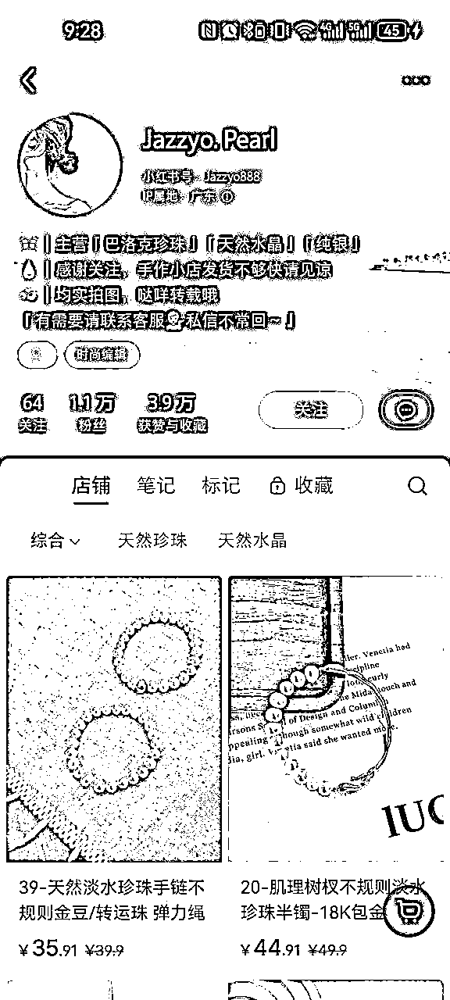

来源：https://k881v1y7m5.feishu.cn/docx/BvEwdkixzoaXsJxxPT3cgAAWnic
本篇拆解大纲如下
1、赛道背景
2、手串
3、手链
4、常见的引流方式汇总
5、其他注意的点
6、总结
雍和宫手串、灵隐寺手串和深圳水贝的珠宝市场等热门话题的产生，手工饰品赛道展现了巨大潜力。这些手串因其文化价值和时尚设计，在年轻人中极受欢迎。
同时，深圳水贝的珠宝市场反映了市场对高质量手工饰品的需求。创业者可利用当地产业链资源，开发符合市场需求且具有独特文化价值的产品，通过社交媒体营销和线上销售，扩大市场覆盖范围，提高品牌知名度和用户粘性。
本次拆解主要针对手串和手链，根据灰豚数据的行业流量大盘显示，手部饰品赛道非常细分，占据饰品整体流量的40%。
手串起源：手串起源于古代宗教，最初用于念诵经文和计数，随着时间的推移，它从宗教工具转变为文玩饰品，现在则成为流行的时尚饰品。
文玩手串与时尚手链的区别：
手串和手链在佩戴方式上是相似的，都是戴在手腕上的饰品，但它们在材质、制作工艺、佩戴目的和文化内涵上有明显的区别。文玩手串更注重材质的自然属性和工艺的独特性，以及传统文化的传承；而串珠手链则更注重外观的时尚和美观，以及现代流行文化的体现。
2023年2月以来，预定雍和宫景区门票的人群中，90、00后占据50%。
当代年轻人沉迷玄学，遇到挑战选躺平，诸事不顺怪水逆。
在上进和上班之间选择了上香，在求人和求己之间选择了求佛。
寺庙祈福的爆火也带火了寺庙周边，根据灰豚数据显示，在雍和宫、灵隐寺关键词的话题中，关于手串的话题占据一半的数量。各种明星同款，也让粉丝们纷纷加入战局。
产品风格：通常由菩提子、香灰瓷这种具有美好寓意的佛珠穿成，造型比较中性，不挑性别，不同的搭配代表不同的寓意，通常请完手串顺便在寺庙开光，增加灵性。
目标用户：玄学沉迷90后、00后，明星粉丝
变现：均价200、300，与寺庙相关的基本都是线下店，不过目前在小红书看到寺庙官方账号只有普陀山。
越来越多的年轻人开始盘串，一部分是顺应寺庙拜佛的潮流，一部分来源于新中式风格的助推，还有宁静、白敬亭等明星们的助推，文玩手串成为潮流，话题浏览量14亿+。甚至一度在小学生中风靡。

产品风格：款式简单、大方，主要是玩石头和各种植物种子。（现在还有盘玉米的）
目标用户：文玩爱好者，上到打工人，下到小学生。
变现：均价10-30，1688上找到2块，按示例这两家1w的销量来算，利润在8w-28w。
在灰豚数据搜索#手串话题，大部分的话题都提到了材质，相对于寓意，大家对于手串材质的关注更大。
也可以话题数据看出，水晶、和田玉、沉香、朱砂、翡翠等的高热度，非常适合做垂类账号。
账号名称：普陀山
粉丝：12.4万
账号类型：企业号
内容展现形式：图文（主要）+视频
更新频率：笔记数1.3天/篇
账号数据：笔记数111/获赞9.1万/收藏2.0万
笔记内容：普陀山旅游攻略/佛教知识/产品介绍/寺庙活动介绍
互动：发布的文化类笔记的互动量最高，大家喜欢在评论区里祈福。评论区高频词为“随喜”“赞叹”“福气”“好运”
主要的变现方式：直播+图文，引流小红书店，铺售卖产品
收入估算：纯手串销量预估在4.2万，成本无法估计，按150元的均价来算，销售额在630万。
账号名称：一叶菩提一叶⭐
粉丝：3.4万
账号类型：素人号
内容展现形式：图文
更新频率：笔记数2.7天/篇
账号数据：笔记数966/获赞9.6万/收藏2.9万（数据一半来源于置顶的那个单篇笔记）
笔记内容：笔记图片单图，文案也是2句话介绍图片上新款式
互动：笔记基本无互动
主要的变现方式：图文引流小红书店，铺售卖产品
收入估算：店铺销量在9.6万，单价12，1688上看到相似款仅2元，利润96万。
在收集手串的数据时发现，佛珠、木制手串只占到手串整体的10%。珠宝手串、手链依旧还是流量大头。
带着一些好奇，也试着去拆解了部分手链的类目
星座手串根据西方占星学的理念，结合十二星座有关。每种星座都有其相应的玉石或水晶手串，这些手串不仅能够装饰自身，还能带来好运，甚至改善个人的性格和命运。

产品风格：串珠水晶为主要材质，造型更加适合女生。
目标用户：喜欢星座的女生
变现：以示例的太阳石为例，1688上搜索相似款式价格30左右，图片款售价79，利润高达60%。
近几年现在更喜欢讨论MBTI，相对较少的谈论星座，但是从灰豚数据上显示，“十二星座”话题浏览量高达54.3亿，30天内关于星座相关的笔记3000+。
产品风格：结合明星元素
目标用户：追星达人
变现空间：找到的案例均价10，1688、拼多多上找到相似款3块。上图“吉阳”自主设计的款式价格达到了25块到60块。
新中式穿搭的爆火， 也带火了新中式相关的配饰，在小红书上搜索#新中式话题，有36.9亿的关注度，但是话题爆款内容里有很多新中式的串珠手链笔记。

产品风格：新中式风格
目标用户：喜欢新中式穿搭的人
变现空间：找到的案例均价200左右，串珠材料多为水晶、捷克珠、天然石等平价材料，1688、拼多多上找到小串珠材料差不多10块钱100颗，大串珠可能根据会有较大偏差，但是利润依旧很喜人。
咖啡豆手链（咖啡+手作）

在灰豚数据搜索#手链话题，除了提到的黄金和珍珠之外，区别于手串，出现了“闺蜜”“情侣”等角色、场景词，以及“少女心”“高颜值”等对于手串的样式，以及“平价”等价格的关注。
区别于手串大家对材质的高需求，大家对于手链的需求维度更多元化。
账号名称：紫宸samantha
粉丝：2万
账号类型：素人号
内容展现形式：视频
更新频率：笔记数4月/篇
账号数据：笔记数236/获赞5.8万/收藏2.2万
笔记内容：视频笔记，笔记内容会展示饰品的首饰的材质以及款式，并且会收集顾客评价笔记做成合集，直接关联到笔记中，新顾客不仅可以看到视频中店家的展示效果，还可以直接比对其他买家的买家秀。
互动：粉丝互动性强，评论区的高频词为“直播”“上身”“材料”，从高频词可以反映出直播间为主要引流渠道，粉丝相对于摆拍，对真人上身效果也很在意。
主要的变现方式：直播、视频笔记引流小红书店，铺售卖产品
收入估算：店铺销量在2.9万，手链均价150左右，由于该店铺还有均价50左右的戒指和耳饰，无法拆分手链部分的收入。
这个账号虽然粉丝数量不高，但在刷账号的过程中，是能很明显能感知到这家店铺的原创性，为了避免抄袭，直接在简介中声明为了保护原创性，部分地区不发货。并且会在主页专门整理定制款合集，一开始就给到顾客不会撞款的印象。
从合集、视频关联的同款佩戴效果合集，多个地方来展现饰品的上身效果，也可以让喜欢她家款式的用户，能立马下单。
1、简介中留好钩子
2、直播间引流淘宝店铺和私域：
3、合集留微信号
4、群公告引流
5、图文引流
6、小号引流
1、足够垂直：
根据你要卖的人群，明确大致赛道，首饰饰品种类繁多，新手更适合先做一个垂直类目，比如只卖文玩的朱砂，只卖沉香，或者只卖珍珠。

2、结合定位人群带上关键词：
带上升学、考研上岸、生肖、新年祈福等类型的手串，提升热度。相应的也会可以拉升低端手串的价格。
命理玄学相关的内容属于敏感内容，因此准备入局玄学手串一定要做好文案尺度的把控。
手串和手链的界定并没有那么的清晰，珍珠的手链也可以赋予发财、好运的寓意，木制的佛珠也越来越时尚，你要把什么样的饰品以什么样的方式卖什么样人群，人群是核心是根本。死死抓住用户痛点，持续输出，跑通变现闭环。
在拆解的过程中也发现，首饰细分赛道众多，新手先入局，尽量通过无货源的模式去线上试错。在没有了解的情况下避免高额成本。